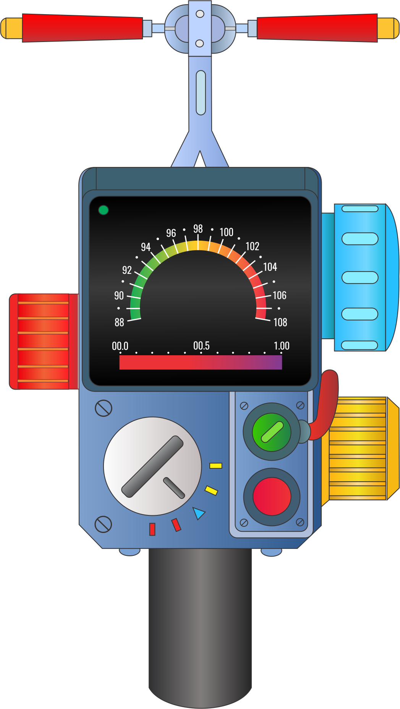
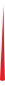

<body>
    
    
    
</body>
<style>
body {
    background: url('back2.jpg');
    background-size: cover;
    height: 100vh;
    width: 100vw;
    display: flex;
    align-items: center;
    align-content: center;
    justify-content: center;
}
@keyframes animacija
{
0%,10% {transform: rotate(-110deg);}
13%,23% {transform: rotate(16deg);}
26%,39% {transform: rotate(74deg);}
39%,49% {transform: rotate(-96deg);}
52%,62% {transform: rotate(84deg);}
65%,75% {transform: rotate(45deg);}
78%,88% {transform: rotate(-20deg);}
91%,100% {transform: rotate(-110deg);}
}
#rodykle {
  transform: rotate(-110deg);
  transform-origin:50% 100%;
  animation: animacija 15s ease-in-out;
  animation-direction:alternate;
}
#rodykle {
    position: relative;
    width: auto;
    height: 14vh;
    bottom: 13vh;
}
@keyframes animacija2
{
0% {transform: translateX(-90px);}
12.5% {transform: translateX(-2px);}
25% {transform: translateX(42px);}
37.5% {transform: translateX(-2px);}
50% {transform: translateX(28px);}
62.5% {transform: translateX(-62px);}
75% {transform: translateX(-17px);}
87.5% {transform: translateX(-2px);}
100% {transform: translateX(-90px);}
}
#baltarodykle {
  transform: translateX(-90px);
  transform-origin:50% 50%;
  animation-delay: animacija2 5s;
  animation: animacija2 20s ease-in-out;
  animation-direction:alternate;
}
#baltarodykle {
    position: relative;
    width: auto;
    height: 5vh;
    bottom:-2vh;
}
#aparatas {
    position: absolute;
    width: auto;
    height: 105vh;
}
</style>